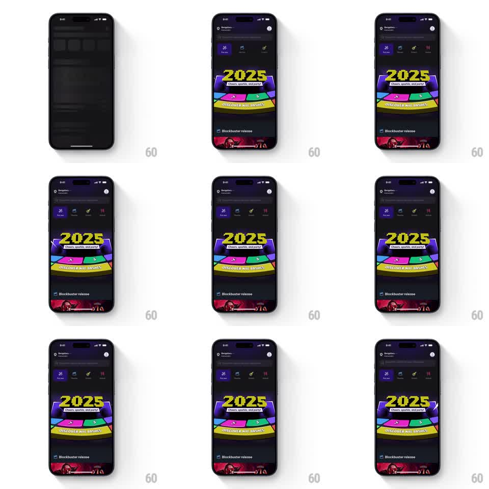

Media
Frame-by-frame

Rebuild this animation 1:1: a New Year's Eve theme banner on a dark events app - "2025" in huge chrome numerals over a spinning prize-wheel illustration, with wiggling text, floating speech-bubble chips, and a marquee strip ("DISCOVER NYE BASHES") along the banner's bottom edge.

Rebuild this animation 1:1: a New Year's Eve theme banner on a dark events app - "2025" in huge chrome numerals over a spinning prize-wheel illustration, with wiggling text, floating speech-bubble chips, and a marquee strip ("DISCOVER NYE BASHES") along the banner's bottom edge.
## Integration
Integration: stack-agnostic spec - springs given as stiffness/damping, timed motions as duration + curve; map every value to your framework and animation library of choice.
## Scene
Dark home feed. The hero banner: neon-purple gradient stage, chrome 3D "2025" numerals with a small chip ("Cheers, sparkle, and party!"), a colorful segmented wheel beneath, floating circular accent chips, and a diagonal ribbon marquee at the banner's base.
## Motion spec
Pattern: looping idle composition, all layers independent.
- Wheel: slow continuous rotation (~12s per revolution, linear).
- "2025" numerals: gentle wiggle (rotate +-1.5deg, scale 1 -> 1.02, 2.4s ease-in-out).
- Speech-bubble chip: floats (translateY +-5px, 2.8s, phase offset from the numerals).
- Marquee ribbon: text scrolls horizontally at ~40px/s, seamless loop.
- Small sparkle accents twinkle (opacity 0.2 -> 1, 1.2s, random delays).
- Loop is seamless and indefinite; no interaction.
## Calibration
- Every layer has its own period - nothing shares a cycle, which keeps it alive instead of mechanical.
- The wheel is slow enough to read the segments.
## Reduced motion
All loops stop; banner renders as a still.
## Don't miss
- Chrome numerals need an animated highlight sweep (a light band crossing every ~4s) to read as metal.
- The marquee ribbon is slightly rotated (-4deg) and extends past both banner edges.